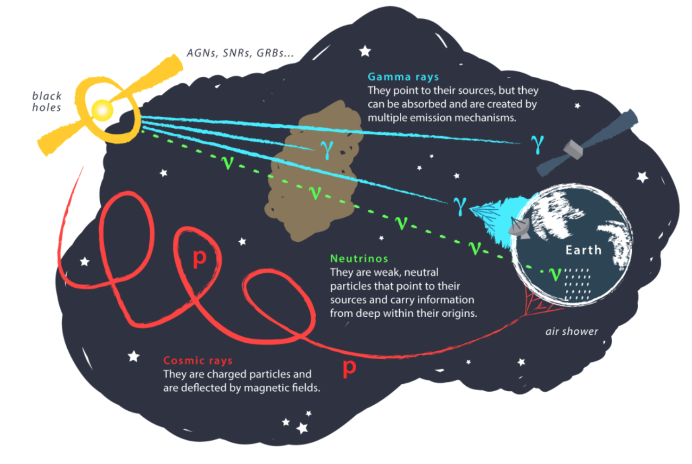

Research
These days, I find myself increasingly drawn to multi-messenger astrophysics, particularly in its application to the study of active galactic nuclei. I am intrigued by the potential of computational techniques in unraveling the mysteries surrounding these fascinating objects.
Bachelor thesis
In my research, I investigated the origins of Ultra-High-Energy cosmic rays (UHECRs) using a multi-messenger approach. The IceCube neutrino observatory identifies astrophysical neutrino candidates in real-time, prompting follow-up observations by telescopes like MAGIC. Analyzing data from these telescopes, I calculated gamma-ray flux upper limits from eight neutrino events.
Central American - Caribbean Bridge in Astrophysics Remote Internship
During my three-month internship, I focused on studying spiral galaxies and investigating why the majority of them exhibit either two or four arms, with three-arm spiral galaxies being less common. We conducted an analysis of the environments where spiral galaxies form based on their arm counts. Utilizing data from the Galaxy And Mass Assembly (GAMA) survey and Galaxy Zoo projects, we created histograms illustrating galaxy density and neighboring galaxies within a cylinder for various spiral arm counts. Our findings indicated that spiral galaxies, regardless of their arm count, tended to inhabit similarly dense environments. However, there were indications suggesting that galaxies with more arms may reside in less dense surroundings. Notably, four-arm spirals stood out as inhabiting a distinct group environment compared to others.